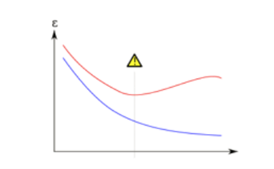

Overfitting
# Overfitting
Overfitting is a "phenomenon where fitting the observed facts (data) well no longer indicates that we will get a decent out-of-sample error, and may actually lead to the opposite effect." (Abu-Mostafa, 2012) Overfitting occurs when noise in the data "has misled the data." (Abu-Mostafa, 2012) “Noise” in this context means data points which do not represent the true properties of the data, but only exist due to random chance. (Lever, 2016) Overfitted models “tend to memorize all the data, including unavoidable noise on the training set, instead of learning the discipline hidden behind the data.” (Ying, 2019)
Another cause of overfitting is “when the training set is too small or is not representative of the data as a whole, the noises have a greater chance of being learned, and later act as a basis of predictions.” (Ying, 2019) Overfitted models “tend to memorize all the data, including unavoidable noise on the training set, instead of learning the discipline hidden behind the data.” (Ying, 2019)
Additionally, there is a tradeoff between bias and variance that one must consider. “When a model is too complex, it overfits the data. This happens because the model works too hard to find patterns in the training data that are just caused by random chance.” (Lau, 2020) “When a model is too simple, it underfits the data. Underfitting occurs when the true relationship between the explanatory variables and the response variable is simpler than it is.” (Lau, 2020) In the graph below, the horizontal axis is epoch, and the vertical axis is error, the blue line is the training error and the red line is the validation error. If we stop learning before the yellow triangle, it’s underfitting. If we stop after the yellow triangle, we get overfitting.

Another “cure” for overfitting is regularization. (Abu-Mostafa, 2012) Regularization means “restricting a model to avoid overfitting by shrinking the coefficient estimates to zero.” (Abu-Mostafa, 2012) When a model becomes too complicated, it tends to take all the features into consideration, even though some of them have very limited effect on the final output. (Ling, 2019) Regularization avoids overfitting by adding a penalty to the model’s loss function. (Ling, 2019) Ying proposes pruning the model “to reduce classification complexity by eliminating less meaningful, or irrelevant data.” One can implement pre-pruning by deleting conditions and rules from the model during the learning process or post-pruning by removing conditions and rules from the model that were generated during the learning phase. (Ying, 2019)